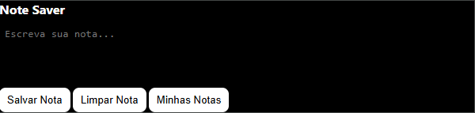

Com o Note Saver, você pode anotar ideias e lembretes sem precisar abrir outro app. Suas notas ficam armazenadas no próprio navegador, mesmo depois de fechar o Chrome.
Escreva e salve uma nota instantaneamente no popup da extensão.
Mantenha um histórico organizado com infinitas notas.
As notas ficam salvas no navegador usando chrome.storage.local.
Apague rapidamente o conteúdo atual com apenas um clique.
chrome://extensions/.